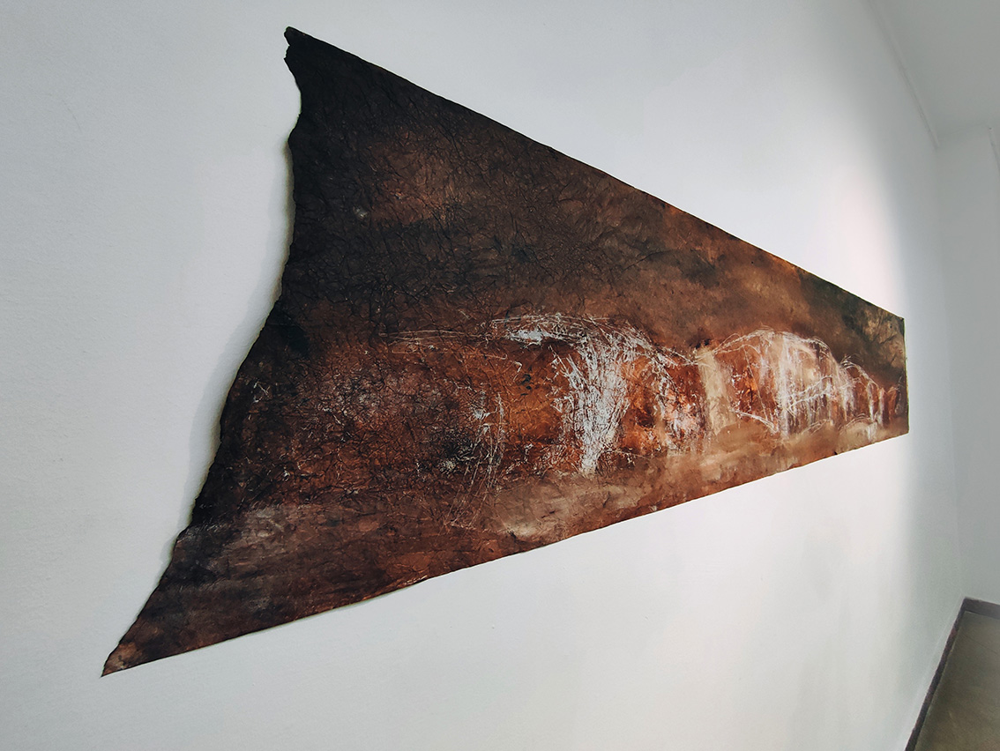

Disappearing Landscapes
2025–now
I have worked with landscapes in various forms throughout my life — from childhood watercolors and student oil paintings to land art. And time and again, I return to this theme.
The landscapes that live in my memory are so dear to me that I painted them in childhood, during my student years, and as an adult. But how well do I really remember them? Where is that memory stored — in the hands, in the gaze? It feels like a dream — fragile, unstable.
Many of these places are now inaccessible because of the war; some have been erased by merciless time. These landscapes exist only in my elusive memories. Do they still belong to me? Do I belong to them? All this love, all this sorrow.
In this project, I aim to create a series of “disappearing landscapes,” distilled to the essence of my memory. The uncertainty and dreamlike nature of these images are enhanced by the technique I use — hand-printed monotype. It gives the works an unearthly, almost sacred quality, like ancient icons that have outlived their saints.
Project in progress.


{kind=link}
{kind=link}
{kind=link}
{kind=link}
{kind=link}
{kind=link}